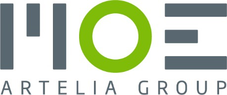
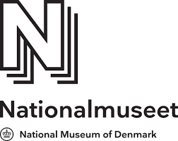
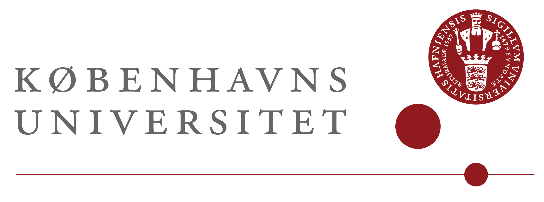

Lad os arbejde sammen om jeres mål
Har I ikke selv kapaciteten, eller mangler I specifikke kompetencer på kontraktledelse og Facility Management-området? Vi hjælper jer gennem hele processen, både med hensyn til rekruttering og kvalificerede ressourcer.
-
Fastprisaftale
Vi aftaler en fast pris baseret på omfanget af de opgaver, der skal udføres.
-
Timebasis
Kender i ikke på forhånd til projektets nøjagtige varighed og omfang, kan vi lave en aftale med betaling af medgået tid på projektet.
-
Resultatbetinget
For at reducere den økonomiske usikkerhed, kan vi aftale et honorar, som afhænger af det opnåede resultat.
-
Midlertidig ledelse/specialist
Mangler i ressourcer til en defineret hasteopgave, kan vi påtage os en midlertidig ledelses- eller specialistrolle i en eventuel rekruterings- og/eller implementeringsperiode.
Det siger kunderne om Paustian Consulting
-

Paustian Consulting har hjulpet MOE Bygherrerådgivning med et TFM-projekt, der inkluderer en udbudsproces for en samlet drift og vedligeholdelses aftale. Med Paustian Consulting får vi hurtig tilføjelse af kvalificerede kompetencer og ressourcer til konkrete projektopgaver. Kendetegnet hos Paustian Consulting er høj integritet, professionalisme i øjenhøjde, rettidig omhu og kvalitet. Vi oplever at Paustian er i særklasse i forhold til at have MOE Bygherrerådgivning og vores kunders målsætninger for øje. Samarbejdet udmærker sig blandt andet ved, at Paustian uproblematisk forstår og tilpasser sig MOE Bygherrerådgivnings virksomhedskultur, vores arbejdsprocesser og agerer som en fuldt integreret del af det samlede projektteam.
-

Paustian Consulting, hjælper bl.a. driftsansvarlige inden for FM- og servicebranchen med at lede forandringsprojekter, udvikle servicekoncepter, optimere og forenkle processer. Med Paustian Consulting får vi hurtig tilføjelse af kvalificerede kompetencer og ressourcer til konkrete initiativer, for øget gennemsigtighed og effektivitet indenfor vores ansvarsområder. Kendetegnet hos Paustian Consulting er et dedikeret fokus på vores organisations behov, høj integritet, professionalisme i øjenhøjde og kvalitet. Paustian Consulting har med deres markedsindsigt, hjulpet os med at gennemgå vores underliggende processer samt understøttet konkrete besparelser i driften. Eksempel: På servicelinjen, Måtteservice, har NAT opnået en 50% besparelse uden ændring af kvalitetsniveau.
-

Paustian Consulting, hjælper bl.a. driftsansvarlige med at optimere kontraktdatabasen, skabe gennemsigtighed og sikre lovpligtige service aktiviteter samt optimere og forenkle processer. Konkret har Paustian Consulting, senest, hjulpet KU SUND med at kortlægge alle servicekontrakter med et særligt fokus på opfyldelse af compliance på hhv. interne og eksterne krav. Paustian Consulting har med markedsindsigt, sikret overblik på status quo, input til yderligere optimerings initiativer, leveret et servicekontrakt værktøj, der understøtter, det kontinuerlige arbejde med servicekontrakter.